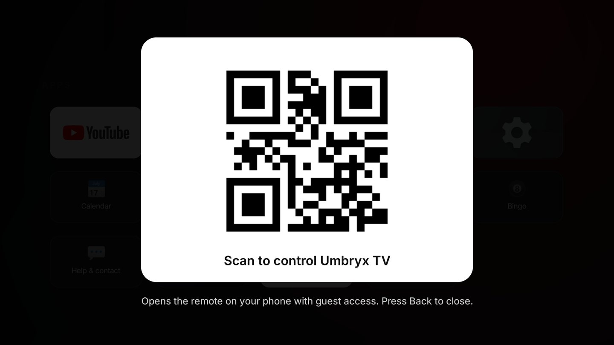
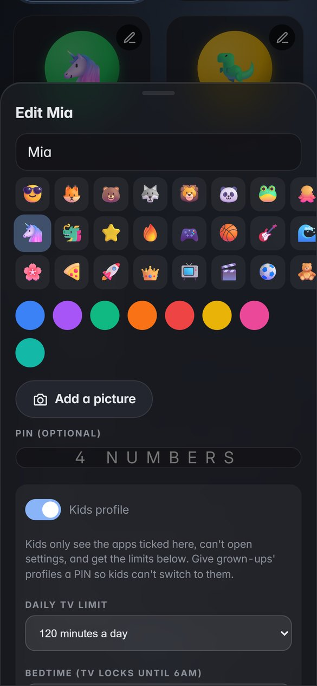
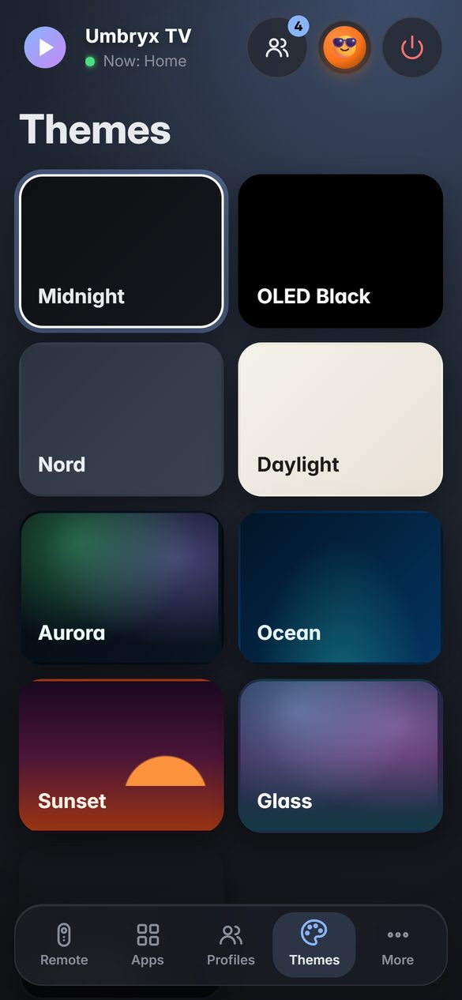
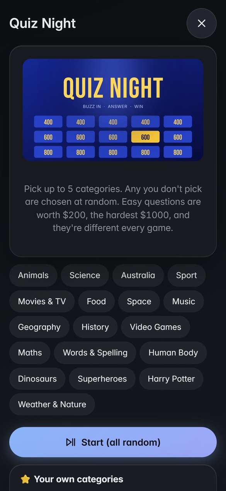
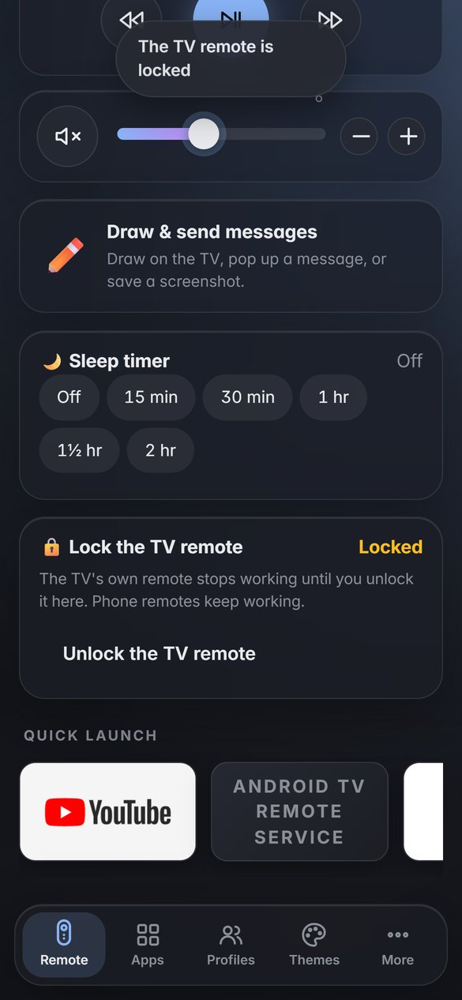

Short videos and quick answers for everything Umbryx TV does. Still stuck? I'm a call away.
Anyone who scans the code gets a guest remote. To unlock everything (settings, profiles, installing apps), type the owner code under More on your phone. It's shown in Umbryx TV Settings › Phone remote.

Everyone shows up in "Who's watching?" when the TV turns on. Tap a profile on your phone to be them; Put on TV switches the TV too.

Open Themes on the phone remote and tap one: the TV changes straight away. Each profile keeps its own theme. You can also choose on the TV in Umbryx TV Settings.
For Your Photo, pick any photo from your phone and it becomes the background.

Press Back to leave a game; it keeps its place until someone starts another.

On the owner's phone remote, scroll down the Remote screen to Lock the TV remote and tap it. The TV's own remote stops working; phone remotes still work. Tap it again to unlock. It stays locked even if the TV restarts.

On the owner's phone, open More › Screen time and tap See the full report: everyone's time this week, day by day, and the apps they used most, compared with last week. Each Monday the TV shows a short summary too.
Screen time stays on your TV and is kept for about five weeks. Time on the home screen and the screensaver doesn't count.
Hold the Home button on your TV remote for a second to open the original Google TV home. Press Home to come back to Umbryx TV.
Your apps are the same in both. Updates to Umbryx TV install by themselves; to check now, open More › Updates on the owner's phone.
Make sure your phone is on the same Wi-Fi as the TV (not mobile data), and that the TV is on. Then scan the code again from the Join the remote tile.
The buttons need the TV's Network debugging to be allowed. On the TV, open Umbryx TV Settings › Phone remote and select Connect. If the TV asks "Allow debugging?", tick Always allow and pick Allow.
That's Umbryx TV asking to use the phone remote's buttons. Tick Always allow and pick Allow. Android can forget it after a week unused; to stop that for good, open Developer options and turn on Disable adb authorization timeout (I do this when I install).
The remote might be locked. On the owner's phone, open the Remote screen and tap Unlock the TV remote. If that's not it, check the remote's batteries.
A short press opens Umbryx TV and holding it opens Google TV, so try a quick press. If it still doesn't, get in touch and I'll sort it out.
They've used up today's TV time or it's past their bedtime. A grown-up can switch to their own profile, give more time from Kids today in Profiles on the owner's phone, or change the limits there.
Free for 6 months after your installation. You can also scan the Help & contact tile on your TV to save my details.
umbryxtvsupport@gmail.com0423 150 432